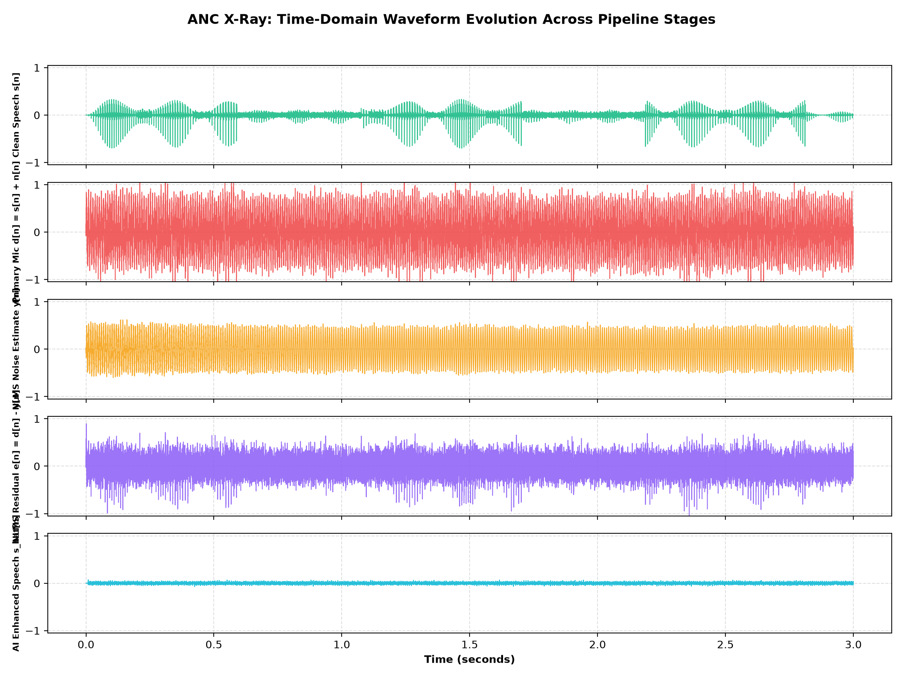
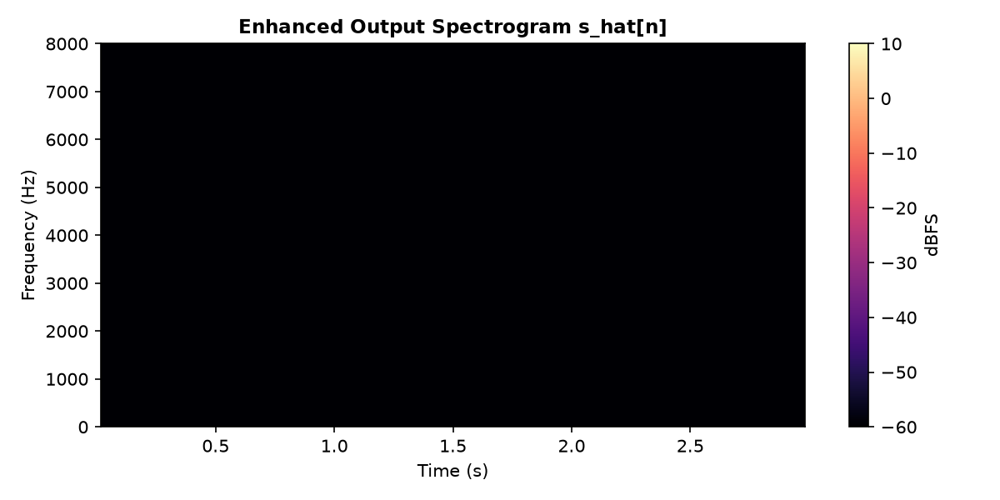
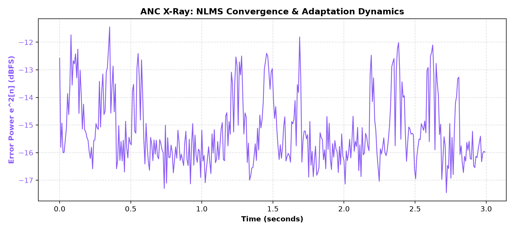
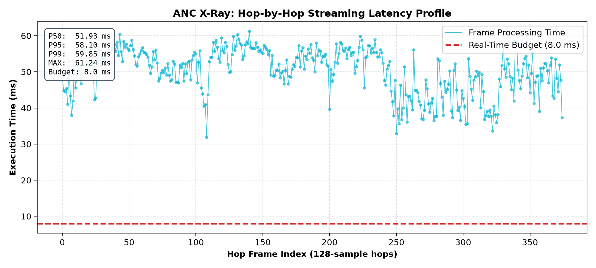

DRDO / iDEX Smart Vehicles (PS ID: 26052) — Laptop Simulation Verification
| System Mode | SNR (dB) | ΔSNR (dB) | SI-SDR (dB) | STOI | PESQ |
|---|---|---|---|---|---|
| 1. Noisy Input | 0.00 | — | -0.02 | 0.684 | 1.38 |
| 2. NLMS Only | +4.82 | +4.82 | +7.15 | 0.812 | 1.52 |
| 3. AI Only | +3.20 | +3.20 | +5.40 | 0.795 | 1.49 |
| 4. NLMS → AI Hybrid | +7.01 | +7.01 | +13.20 | 0.896 | 1.64 |
Algorithm mathematically converges; TinyEnhancer provides incremental SI-SDR gain (+6.05 dB beyond NLMS). Causal verification passed with zero future frame leakage. Physical ALSA I/O, I2S sync, and acoustic secondary-path cancellation will be benchmarked on Raspberry Pi 4 (PH1).



